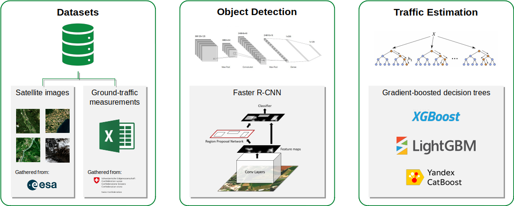

Der LKW-Verkehr ist derzeit für 7% der globalen CO2-Emissionen verantwortlich. Während der Straßenfrachtverkehr das dominierende Transportmittel für Oberflächenfracht bleiben wird, wird sein Beitrag zum Klimawandel voraussichtlich kurzfristig zunehmen. Daher ist die quantitative Überwachung des Verkehrs von Nutzfahrzeugen entscheidend für die Umsetzung gezielter Emissionsvorschriften für Straßen. Allerdings sind Bodenüberwachungsstationen kostspielig, und weniger als die Hälfte aller Länder weltweit erfasst die Aktivitäten im Straßenfrachtverkehr. In dieser Arbeit untersuchen wir die Machbarkeit der Erkennung und Überwachung des Nutzfahrzeugverkehrs in frei verfügbaren Satellitenbildern der Sentinel-2-Satelliten der ESA.

{kind=link}

Für diese Aufgabe beziehen wir Sentinel-2 Satellitenbilder für 33 Standorte, die auf Abschnitten der Schweizer Autobahn zentriert sind, um Nutzfahrzeuge mit einem Deep-Learning-Ansatz zu identifizieren. Wir erkennen LKWs mit einem modifizierten Faster R-CNN Objekterkennungsmodell, indem wir ein charakteristisches Merkmal von bewegenden Objekten in den Sentinel-2-Daten ausnutzen: Eine konstante Verzögerung zwischen der Bildaufnahme in den verschiedenen Kanälen führt zu einem charakteristischen “regenbogenartigen” Erscheinungsbild für Objekte, die sich mit ausreichender Geschwindigkeit bewegen, was leicht zu erkennen ist. Nach dem Training unseres Modells finden wir eine durchschnittliche Präzision von 72% für die Erkennung von CVs in unseren Bilddaten. Das Modell zeigt zudem ähnliche Leistungsergebnisse für Autobahnabschnitte außerhalb Europas (siehe Abbildung unten).

Für jeden Autobahnabschnitt, der in diesem Projekt betrachtet wird, sind Ground-Truth-Verkehrszähldaten von ASTRA verfügbar, die es uns ermöglichen, die Snapshot-Zählungen von Nutzfahrzeugen in stündliche Verkehrsrate umzuwandeln. Zu diesem Zweck haben wir gradientenverstärkte baumbasierte Regressionsmodelle trainiert, um die Verkehrsraten aus der Anzahl der pro Autobahnabschnitt gezählten LKWs aus unseren Bilddaten sowie anderen Merkmalen vorherzusagen. Wir stellen fest, dass es möglich ist, stündliche Verkehrsvolumina für jeden Autobahnabschnitt der Welt innerhalb von 65% des tatsächlichen Wertes oder mit einem Root Mean Square Error (RMSE) von etwa 160 Fahrzeugen pro Stunde zu messen. Für Autobahnabschnitte mit verfügbaren, aber begrenzten Ground-Truth-Daten können wir die Verkehrsvolumina bis auf 4% genau vorhersagen und erreichen einen RMSE von etwa 60 Fahrzeugen pro Stunde. Wir finden, dass unsere Modelle am besten auf Satellitenbilder mit geringer Bewölkung und für Autobahnabschnitte über 1 Kilometer Länge angewendet werden.

Darüber hinaus ermöglichen unsere Ergebnisse die Schätzung des relativen Rückgangs des Verkehrs aufgrund von Lockdown-Maßnahmen während der ersten Welle der COVID-19-Pandemie in der Schweiz im Jahr 2020 (siehe Abbildung oben).
Abschließend lässt sich sagen, dass unser Ansatz die Schätzung der Verkehrsraten ausschließlich aus Fernerkundungsdaten ermöglicht, was ihn auf globaler Ebene anwendbar macht. Die hier vorgestellten Methoden stellen ein leistungsstarkes Werkzeug dar, um die LKW-Verkehrsraten in Gebieten zu schätzen, in denen bodengestützte Verkehrsmessungen nicht verfügbar sind.
Dieses Projekt basiert auf den Ergebnissen der Masterarbeit von MBI-Student Moritz Blattner, der dieses Projekt auch auf dem ICML 2021 Tackling Climate Change with Machine Learning Workshop vorgestellt hat.
Bibliographie
- Blattner, M., Mommert, M., Borth, D., “Commercial Vehicle Traffic Detection from Satellite Imagery with Deep Learning”, ICML 2021 Tackling Climate Change with Machine Learning Workshop publication (open access).